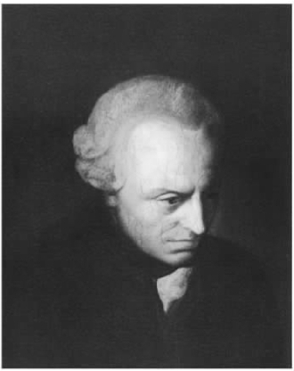
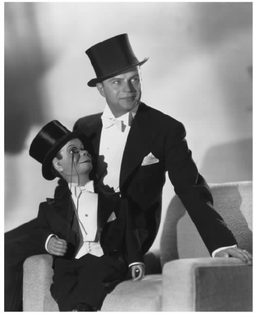

对上一章所描述的哲学的发展，克尔凯郭尔的反应是复杂的。正如他在不同的著作里非常明确地表明的，他非常赞赏康德全然反对通过理论方法论证基督正教的基本教义。另一方面，康德的批判性哲学留下了一些问题，对解决这些问题的种种努力，他似乎又难以接受。因为这些努力实际上是在以这样或那样的方式竭力证实基督教信仰的合理性。从好的方面讲，这种合理性涉及基督教信仰的虚弱；在最坏的情况下，则涉及它的完全转化。
实际上，对于康德最初的信念，即宗教信仰不是一个知识的问题，而是一个信念的问题，克尔凯郭尔绝非不赞同。之后，他以自己的方式大量地探讨康德的这一观点。不过，还有另一点——康德自己一直是这样做的——要说明一下，即通过利用理性的伦理力量，可以多少回避理论的或认知的理性的局限。与“实践理性的基本原理”一样，信仰上帝和相信个人的不朽必须以道德意识为前提——这一观点相当于把道德而不是宗教当做人类关注的中心话题；此外，正是从这一见解得出的推论使基督教的历史方面有可能被大大地边缘化。由于黑格尔哲学立志要表明，对宗教可以进行这样的诠释，即它归根结底是客观真理的仓库。如此一来，上面提到的这些难题（如果是难题的话）不仅远远没有得到解决，反而变得更为严重。宗教观念应被解释成在人类思维的原始和神话阶段所表述的东西，其潜在的意义有待一个包罗万象的形而上学体系把它们放到自己的基本框架中去明确表述——这一观点可能已经得到许多当代神学家的接受。不过，在克尔凯郭尔眼里，这实际上意味着对基督教要义的极端修正，最终是要用另一套完全不同的准则去取代它。如此，无论黑格尔如何表白他的意图，我们至少感到，与那些对黑格尔思想的基本要义持欢迎态度、认为它从理性上证实了传统教义的人们相比，青年黑格尔派更具洞察力，更能把握黑格尔思想的基本要义。乍看之下，形而上学的唯心论和人本主义的无神论有天壤之别，不过，如果用黑格尔对绝对精神神秘而隐晦的暗示来取代对人类具体活动的指称，那么二者之间的相互转化并不难看出来。
即便如此，丹麦还是有一些诡辩的思想家——马滕森就是其中之一，他曾是克尔凯郭尔的导师——对“最新的德国哲学”印象深刻，认为基督正教对这种哲学的隐含意义无须惧怕。在他们看来，这种哲学根本不会威胁到宗教所坚持的原理，相反，只要运用黑格尔体系的范畴作为媒介，就可以表明这些原理如何能够完好无损地保存下来，并且能够完全符合理性的要求。不过问题来了，比如这种极端的误解是如何产生的？又是如何广泛流行的？答案部分在于无法理解这一体系本身的结构，部分在于无法认识到恰当理解的基督教包括哪些内容。这两个“无法”的原因又在于人们普遍无法把握在克尔凯郭尔看来具有更为根本的意义、由此也是需要优先考虑的问题。用他自己的话说，那就是：

图7 伊曼努尔·康德（1724—1804）。
（《附言》第223页）

图8 腹语者。克尔凯郭尔声言一种“腹语术”已经产生；人们奔向一个观念与学说的非个性化世界以寻求庇护，却不愿直面事实，为自己的生活、性格以及观点负起最终责任。
如果有人声称，人们有可能忘记存在是什么意思，乍一听我们想必会大惑不解，似乎存在是这样一种东西，我们可以清楚地说出自己是否加入到其中或亲身经历过它，就像游泳或头疼一样。一点没错，近来，克尔凯郭尔许多存在主义的追随者并不反对讨论这一看法，而这些讨论方式又很容易引起情理之中的困惑。不过，在当前这种背景下，他所说的没有什么会引起逻辑上的不安。相对而言，克尔凯郭尔的观点很清楚，他相信同时代的大多数人倾向于用某种方式思考自己，也以这种方式行事度日，而他的观点就是关注这种方式。他由此认为，这些人屈从于一种冷漠的、没有个性的意识模式，这种模式阻碍自然的情感，对自我身份缺乏安全感。他们喜欢用“抽象的”术语把一切看做理论上的可能性，他们考虑这些可能性，却不愿倾注心力于这些可能性的具体实现。如果说他们关注自己的态度或情感，那也是通过伪科学的表述或充满陈词滥调的话语这一层浓雾，这些都是从书本或报纸里学来的，而非直接源于内在经验的灵光。生活已经变得与认知有关，而与行动无关；它积累信息，死记硬背地学习，而非经由个人的激情或信仰来作出决定。这就形成一种观念，这种观念只通过固定的反应和机械的反馈来了解一切；人们知道他们应该说什么，但对自己所用的词汇不再赋予任何真正的意义。对此，克尔凯郭尔在《文学评论》中写了一篇相当长的文章，题目是《当今时代》，他说：
（《当今时代》第88—89页）
而且，伴随这些趋势的是另一种倾向，即人们认同难以确定的抽象术语如“人性”或“公众”，由此不再对自己的所思和所言负有个人的责任。大致说来，数量给人以安全感：“人人都有自己的见解，不过为了得到一种见解，他们不得不在数量上结合起来。”（《当今时代》第91页）在实际行为这一层面上多少也有类似的看法。人们喜欢说自己是“按原则”办事，不过他们倾向于认为自己所说的原则来自纯粹外在的或客观的权威，与行动者本人的喜好或关切无关，所以，我们可以“‘按原则’做任何事情，并且逃避一切个人责任”（《当今时代》第85页）。克尔凯郭尔在其他地方说过，“没人，没有一个人，敢说我 ”；相反，“腹语术 [1] ”变成了一种严格规定——普通人成为公共意见的传声筒，教授成为理论假设的传声筒，牧师成为宗教思考的传声筒。所有人都以不同方式成为抽象概念的奴隶，他们视这些概念为独立存在的现实。他们不愿面对这一事实，即人人最终都应对自己的生活、品性和观念负责，相反，他们躲入具体化的观念和信条这一剥夺个性的领地里。
克尔凯郭尔批判这些公开宣称的倾向，认为它们构成了“这个时代具体的不道德性”——他设想自己任务的独特方式就应该放到这样的背景下去考察。他不厌其烦地一再重复，这一时期的思考是缺乏激情的，理解是孤立的。不过，如果因此认为他反对这样的客观研究——有时他就受到这样的批评——那是错误的。通过协作有条不紊地追求客观知识，只要这种追求不超过适当范围就完全合理，如历史学和自然科学中的情形。不过，如果人们利用适合这些学科的方法去研究不真正适用它们的领域，就会出现迷惑和自欺。因为这样一来，他们便看不到自己是独特的个体，只会满足于接受一种沉思性或观察性思维，在这种思维方式下，一切都受制于集体观念那平淡的一般原则和呆板的一般概念。真正属于个人经验和个人复杂状况的因素会因此变成“再现的观念”这种外在的二维背景，人类活动被归入泛泛而谈的概念，这些概念取消了它们的内在价值；并且，这些活动涉及行动者，它们从主观上所应有的意义因而也遭到剥夺。对这种情况，（克尔凯郭尔指出）我们可以打个比方：一个人想在丹麦旅行，他查看一张小比例的欧洲地图，地图只告诉他丹麦在这个世界的何处，周围是些什么地方，对他的目的却没有任何帮助。这种社会思潮不仅影响了现在人们对道德的态度，而且还影响了人们对宗教采取的态度。在日常意识和行动这一层面上，宗教信仰纯粹是名义上的、抽象的，与实际选择的具体背景无关，而正是这种选择赋予了宗教信仰以生机和意义；在哲学家和神学家手里，这些信仰则被转换成理论思辨的语言，人们似乎认为它们符合客观构建的真理之标准，这些标准超越了主观的需求，也超越了个人的观点。
那么，如何应对这些误解呢？最自然的办法就是直截了当地、详尽充分地纠正某些错误的信念和设想。不过就眼前这种情况而言，克尔凯郭尔认为，要是采用这种方法，就有可能忽略真正要讨论的问题。当然，如果这个问题只涉及对纯理论的观点或命题的追问，那么这种方法是可行的。然而，现在的关键所在不是某一套具体的认知观念，而是更基本的问题。确切地说，这是一种非常普遍的看待事物的方式，其根源在于对生活的一种态度，这种态度认为，仅仅是理性的争论会使一个人远离生活。至少，人们首先需要认识到，“对你、我和他，对每个人自己而言，成为一个人意味着”什么，这就要引导他们通过诉诸自己的内在经验，认识到是什么样的观念促使他们选择某一生活方式，以及这种生活方式所施加的限制。要想如此扩大个人对自我的理解，提高其有判断力的自我意识，用抽象的指导或有益的规训进行教育是办不到的：不过可以借助想象的方式进入他或她的观点，通过移情作用引出其感情基础和实际含义，同时，表明它们和其他观点或方法所暗含的感情基础和实际含义有何不同。他称这种受苏格拉底启发的方法为“间接交流”。利用这种方法，并且丝毫不带“客观的”交流模式中经常出现的说教，他希望能使读者更清楚地认识自己的处境和动机。换言之，他的目的不是像学校校长或学究式的教师那样增加他们的理论知识，也不打算像高高在上的权威那样，以专制的方式“强迫一个人去接受一种意见、一种观念、一种信仰”。相反，他想“从背后”接近人们，诱导他们进入一个立场，使他们经由内在的思索，退后一步，作出重大选择：是留在原处，还是进行根本的改变。无论如何，他们作为个体的这种自由和自主都必须得到尊重；一旦他们看清并深刻理解相互对立的生活观包含了什么样的意义，最终就还是要由他们来决定采取什么行动，走什么样的路。但要做到这一点，一个根本的前提是他们必须清楚自己立场的本质和局限性。正如克尔凯郭尔所竭力强调的，特别执着于某一观念的人们尤其容易自欺欺人，用符合此种观念的方式来阐释呈现在面前的一切，认为除此之外别无选择。
克尔凯郭尔认为，正是出于这样的设想，他进入了自己创作的起始阶段，他所谓的“美学”著述便可归入这一阶段。不过在这里要作一番提醒。《吾书之观点》（1859）在他去世后出版，他在此书中回顾了自己写作的目的。从他所说来看，自始至终，他似乎一直受到一种具体的宗教兴趣的指引；他的主要目标一直是为人们扫除他们是基督徒这一幻觉，至少在当时那个阶段，他主要把这种幻觉和人们对被他称为“审美”的生活模式的接受联系在一起。用他自己的话说，“这种幻觉绝不能直接摧毁，只能通过间接的方法才能彻底除掉它”（《吾书之观点》第24页）。不过，我们并不清楚，他在上文所说的是否确切地反映了他更早时候的考虑；人们有理由怀疑，他后来认为自己担负神佑之使命，“像个服务于更高层次的间谍”，这可能并没有促使他过于简单化，甚至扭曲他最初所关注的东西。批评家们一直没有忽略这一点，我们也还要回到这一点。不过首先，我们必须看一看其他一些相关研究的真实内容，过后再讨论这一点在他的思想发展过程中的真正地位。